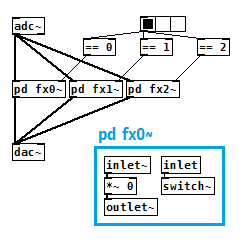

エフェクト切替（Pure Data パッチ）
2018年07月23日 カテゴリー：Pure Data
Pure Data(Pd)でマルチエフェクターを実現するにあたって、複数接続したエフェクトを瞬時に切り替える、いわゆるプリセットチェンジ（パッチチェンジ）をする方法を考えなくてはいけません。Isaac(139)さんの[pd spigot~]のように信号経路を切り替える方法が簡単だと思います。しかし使っていないエフェクト側でもチルダオブジェクトは常に計算を行っているので、[switch~]を利用することにより不要な部分のDSPをオフにしてCPU負荷を軽減できます。

[pd fx0~]・・・のようにエフェクトをサブパッチの形で並べて全て繋げておきます。選択したエフェクトの[switch~]のみに1が入りサブパッチのDSPがオンとなります。信号線がたくさん繋ぎっぱなしですが、選択しなかったエフェクトはDSPがオフなのでおそらく問題ないと思います。この形を複数直列に繋げていけばマルチエフェクターの出来上がりです。
他の信号経路切替方法についてメモしておきます。
・[send~][receive~][throw~][catch~]
ヘルプパッチの通り、setメッセージを使い送信先や受信元を切り替えることができますが、1ブロックサイズ（64サンプル）分の遅延が生じます。遅延回避方法も一応ありますがやや面倒です。
・[multiplex~][demultiplex~]
外部オブジェクトzexyが必要です。複数経路を簡単に切り替えることができます。